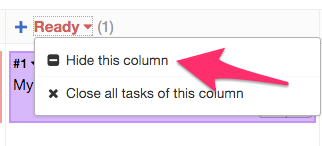
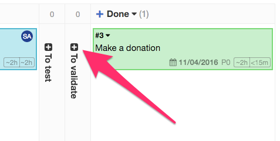

Показать и скрыть колонки на Доске¶
Вы можете показать и скрыть колонки на Доске очень просто:

Рисунок. Спрятать колонку.
Чтобы скрыть (спрятать) колонку , откройте выпадающее меню колонки.

Рисунок.Показать колонку.
Для отображения скрытой колонки нажмите “иконку плюс”